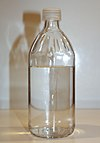

ethyl-alcohol

Has synonym(s): Ethanol, drinking-alcohol
Definition: Ethanol (abbr. EtOH; also called ethyl alcohol, grain alcohol, drinking alcohol, or simply alcohol) is an organic compound. It is an alcohol with the chemical formula C2H6O. Its formula can also be written as CH3−CH2−OH or C2H5OH (an ethyl group linked to a hydroxyl group). Ethanol is a volatile, flammable, colorless liquid with a characteristic wine-like odor and pungent taste. It is a psychoactive recreational drug, and the active ingredient in alcoholic drinks.
Source: Wikipedia
Wikipedia Page (Something wrong with this association? Let us know.)
Wikidata Page (Something wrong with this association? Let us know.)